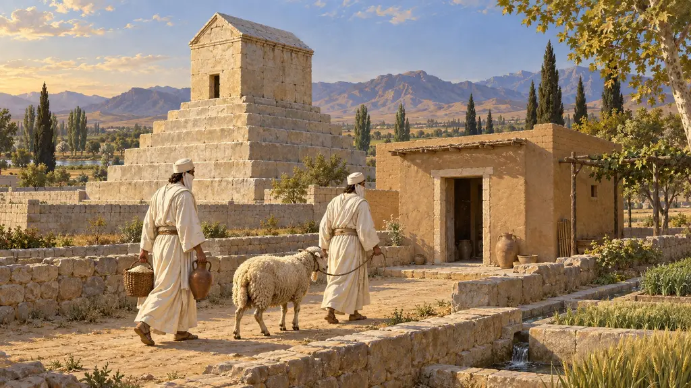
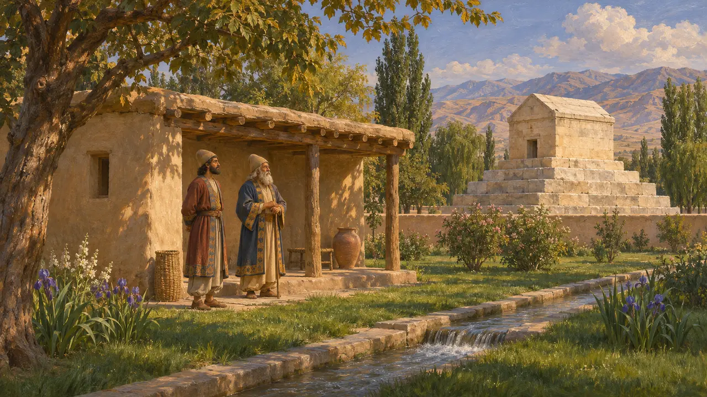
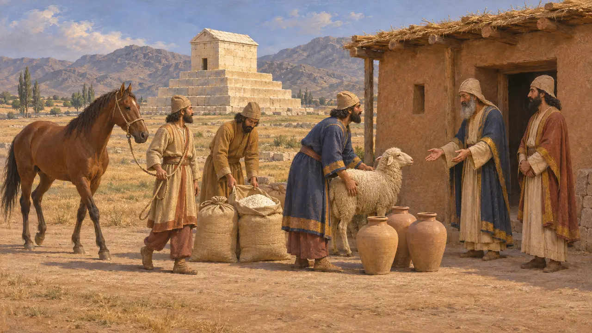
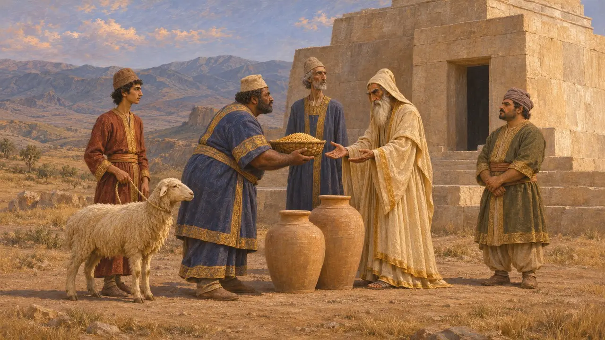
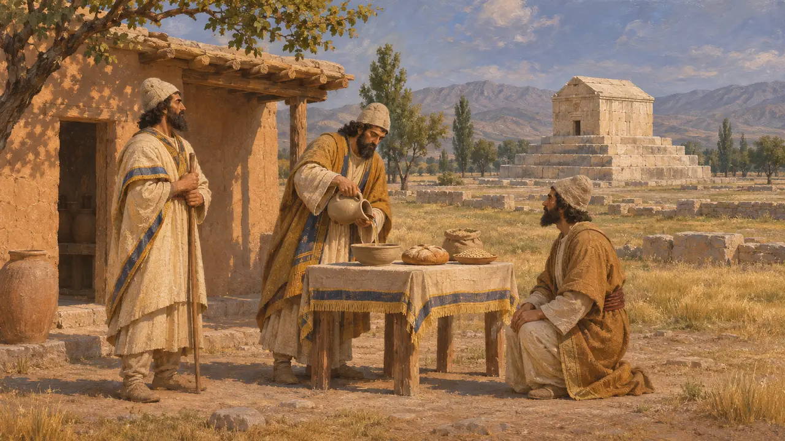
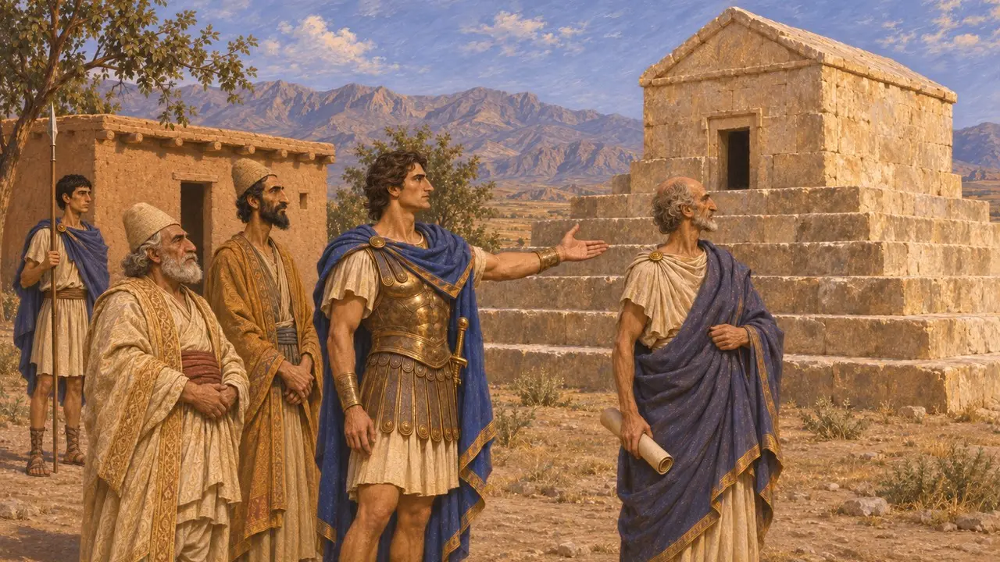

Casa de los magos
Casa de los guardianes junto a la Tumba de Ciro, Pasargada, desde aproximadamente el 530 a. e. c.
En el juego: Nivel 1: La tumba del fundador
Dentro del recinto de la tumba de Ciro en Pasargada se alzaba una pequeña casa para los magos que la custodiaban. Arriano, basándose en Aristóbulo, oficial de Alejandro, dice que estos hombres ocupaban el cargo de padre a hijo desde el reinado de Cambises, mantenidos por el Rey con raciones y animales para sacrificar al fundador difunto. La casa muestra cómo la corte persa mantenía el culto de sus reyes muertos.
En el juego: El juego sigue a Arriano en la oveja, la harina y el vino diarios y el caballo mensual, aunque en el 530 la disposición de Cambises sería completamente nueva y ningún hijo la habría heredado aún. El mago que bendice las casas cercanas es una invención del juego, no un deber documentado.

Lo que vio Aristobulo
Relato antiguoArriano, siguiendo a Aristobulo, que sirvió a Alejandro, describe la tumba en medio de un parque real con árboles, agua y hierba espesa. Dentro del recinto había una pequeña casa construida para los magos que custodiaban la tumba. Dice que el cargo había pasado de padres a hijos desde los tiempos de Cambises. Estrabón ofrece una descripción similar de la tumba, citando también a Aristobulo.
Arrian, Anabasis 6.29; Strabo, Geography 15.3.7

Las provisiones del Rey
Relato antiguoSegún Arriano, el Rey daba a los guardianes una oveja al día, una cantidad fija de harina de trigo y vino, y un caballo al mes para sacrificarlo a Ciro. Ningún texto persa menciona estas cantidades. Heródoto cuenta por su parte que los magos sacrificaron caballos blancos en el Estrimón en el 480, de modo que las ofrendas de caballos dirigidas por magos aparecen en más de una fuente griega.
Arrian, Anabasis 6.29; Herodotus 7.113

Ofrendas por los difuntos reales en las tablillas
En los documentosLas tablillas de la Fortificación de Persépolis, de entre aproximadamente el 509 y el 493, registran grano, vino y animales entregados para ofrendas en las tumbas (en elamita, šumar) de figuras reales como Cambises e Histaspes. También mencionan a magos (makuš) que recibían provisiones para sacrificios. No mencionan a los guardianes de la tumba de Ciro, y las excavaciones en Pasargada no han identificado ningún edificio como la casa de los magos.
W. Henkelman, The Other Gods Who Are, 2008; Persepolis Fortification tablets; D. Stronach, Pasargadae, 1978

Quiénes eran los magos
En disputaHeródoto llama a los magos una tribu de los medos, y la inscripción de Behistún de Darío llama mago al usurpador Gaumata. Las tablillas muestran a los magos en Pérside como especialistas rituales remunerados que también hacían ofrendas a dioses ajenos a cualquier esquema estrictamente zoroástrico. Los historiadores aún discuten hasta qué punto la religión aqueménida era zoroástrica, de modo que las creencias de los guardianes de la tumba siguen siendo inciertas.
Herodotus 1.101; DB §11; W. Henkelman, The Other Gods Who Are, 2008; P. Briant, From Cyrus to Alexander, 2002

Alejandro y los guardianes
Relato antiguoArriano cuenta que Alejandro encontró la tumba saqueada a su regreso de la India en el 324. Hizo arrestar y torturar a los magos para que nombraran a los ladrones, pero no revelaron nada y los dejó en libertad. Después ordenó a Aristobulo que restaurara la sepultura.
Arrian, Anabasis 6.29
Fuentes
- Arrian, Anabasis 6.29
- Strabo, Geography 15.3.7
- W. Henkelman, The Other Gods Who Are, 2008
- D. Stronach, Pasargadae, 1978
- P. Briant, From Cyrus to Alexander, 2002
- Herodotus 1.101; 7.113